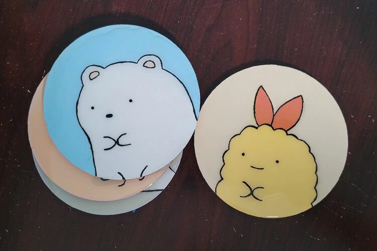
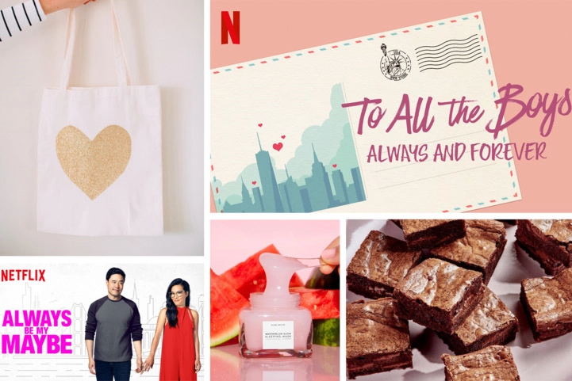

Fun

Fun | 7/25/21
Are you tired of getting stains on your furniture or damaging your tables with your favorite beverages? Well, we have a solution for you - coasters!

Fun | 6/13/21
We love collecting cute ceramic pieces so we took on the challenge of making our own with air dry clay!

Fun | 4/29//21
Following our trend of Internet things, we decided to make our own version of the popular Mini Brands items that have been floating around!

Fun | 4/11/21
If you’ve been on the internet lately, you’ve likely seen this trend going - punch needle rugs.

Fun | 2/18/21
Inspired by the release of the final movie in the To All the Boys I’ve Loved Before Series, I decided to DIY something based on the series.

Fun | 2/14/21
Have you stocked up on your chocolates and flowers yet because it's Valentine's Day!! Or rather Galentine's Day for some of us, the best kind of Valentines Day!

Fun | 2/7/21
This winter I took on one of the largest craft projects I’ve done before, I made a blanket!!

Fun | 1/28/21
As the resin trend continues to grow and our desire to press and dry flowers lingers, it was a no brainer to create some floral resin phone cases. What better combination than natural flowers and resin!!
Fun | 1/10/21
A new year means a whole new set of tv shows to binge on Netflix or any of the many other subscription based sites out there now.
Fun | 1/3/21
Happy New Year everyone!! 2020 was a whirlwind of events and now we are finally on to the new year with new goals and new resolutions.
Fun | 12/24/20
Welcome to our sixth video in the Seven Days of Christmas series where we attempt to make our own ornaments! It’s Christmas Eve and we figured we’d show you all some easy last minute decorations to fill up your tree!
Fun | 12/22/20
We’re back again with another DIY video and this time it's not only for holiday decorating but also for creating the best holiday smelling home for the holidays-- candles!